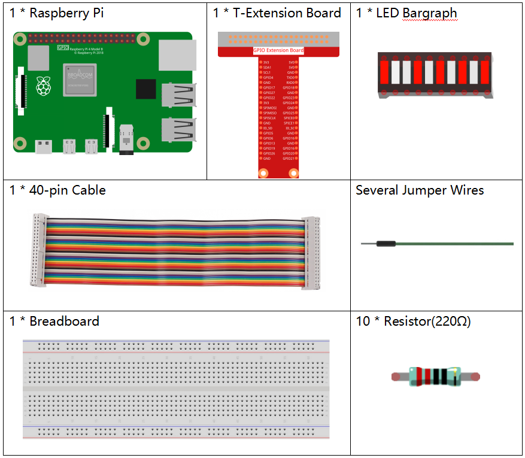

注釈
こんにちは、SunFounderのRaspberry Pi & Arduino & ESP32愛好家コミュニティへようこそ！Facebook上でRaspberry Pi、Arduino、ESP32についてもっと深く掘り下げ、他の愛好家と交流しましょう。
参加する理由は？
エキスパートサポート：コミュニティやチームの助けを借りて、販売後の問題や技術的な課題を解決します。
学び＆共有：ヒントやチュートリアルを交換してスキルを向上させましょう。
独占的なプレビュー：新製品の発表や先行プレビューに早期アクセスしましょう。
特別割引：最新製品の独占割引をお楽しみください。
祭りのプロモーションとギフト：ギフトや祝日のプロモーションに参加しましょう。
👉 私たちと一緒に探索し、創造する準備はできていますか？[ここ]をクリックして今すぐ参加しましょう！
1.1.3 LED棒グラフ
前書き
このプロジェクトでは、LED棒グラフのライトを順番に点灯させる。
部品
原理
LED棒グラフ
LED棒グラフは、電子回路またはマイクロコントローラーとの接続に使用されるLED配列である。10個の個別のLEDを10本の出力ピンに接続するように、LED棒グラフを回路に簡単に接続できる。 通常、LED棒グラフは、バッテリーレベルインジケーター、オーディオ機器、および産業用制御パネルとして使用できる。LED棒グラフには他にも多くの用途がある。

回路図
T-Board Name |
physical |
wiringPi |
BCM |
GPIO17 |
Pin 11 |
0 |
17 |
GPIO18 |
Pin 12 |
1 |
18 |
GPIO27 |
Pin 13 |
2 |
27 |
GPIO22 |
Pin 15 |
3 |
22 |
GPIO23 |
Pin 16 |
4 |
23 |
GPIO24 |
Pin 18 |
5 |
24 |
GPIO25 |
Pin 22 |
6 |
25 |
SDA1 |
Pin 3 |
8 |
2 |
SCL1 |
Pin 5 |
9 |
3 |
SPICE0 |
Pin 24 |
10 |
8 |

実験手順
ステップ1: 回路を作る。

ステップ2: コードのフォルダーに入る。
cd ~/davinci-kit-for-raspberry-pi/c/1.1.3/
ステップ3: コードをコンパイルする。
gcc 1.1.3_LedBarGraph.c -lwiringPi
ステップ4: EXEファイルを実行する。
sudo ./a.out
コードの実行後、LEDバーのLEDが定期的にオン/オフになる。
コード
#include <wiringPi.h>
#include <stdio.h>
int pins[10] = {0,1,2,3,4,5,6,8,9,10};
void oddLedBarGraph(void){
for(int i=0;i<5;i++){
int j=i*2;
digitalWrite(pins[j],HIGH);
delay(300);
digitalWrite(pins[j],LOW);
}
}
void evenLedBarGraph(void){
for(int i=0;i<5;i++){
int j=i*2+1;
digitalWrite(pins[j],HIGH);
delay(300);
digitalWrite(pins[j],LOW);
}
}
void allLedBarGraph(void){
for(int i=0;i<10;i++){
digitalWrite(pins[i],HIGH);
delay(300);
digitalWrite(pins[i],LOW);
}
}
int main(void)
{
if(wiringPiSetup() == -1){ //when initialize wiring failed,print message to screen
printf("setup wiringPi failed !");
return 1;
}
for(int i=0;i<10;i++){ //make led pins' mode is output
pinMode(pins[i], OUTPUT);
digitalWrite(pins[i],LOW);
}
while(1){
oddLedBarGraph();
delay(300);
evenLedBarGraph();
delay(300);
allLedBarGraph();
delay(300);
}
return 0;
}
コードの説明
int pins[10] = {0,1,2,3,4,5,6,8,9,10};
配列を作成し、LED棒グラフ（0、1、2、3、4、5、6、8、9、10）に対応するピン番号に割り当て、配列はLEDを制御するために使用される。
void oddLedBarGraph(void){
for(int i=0;i<5;i++){
int j=i*2;
digitalWrite(pins[j],HIGH);
delay(300);
digitalWrite(pins[j],LOW);
}
}
LED棒グラフの奇数桁のLEDを順番に点灯させる。
void evenLedBarGraph(void){
for(int i=0;i<5;i++){
int j=i*2+1;
digitalWrite(pins[j],HIGH);
delay(300);
digitalWrite(pins[j],LOW);
}
}
LED棒グラフの偶数桁のLEDを順番に点灯させる。
void allLedBarGraph(void){
for(int i=0;i<10;i++){
digitalWrite(pins[i],HIGH);
delay(300);
digitalWrite(pins[i],LOW);
}
}
LED棒グラフのLEDを1つずつ点灯させる。